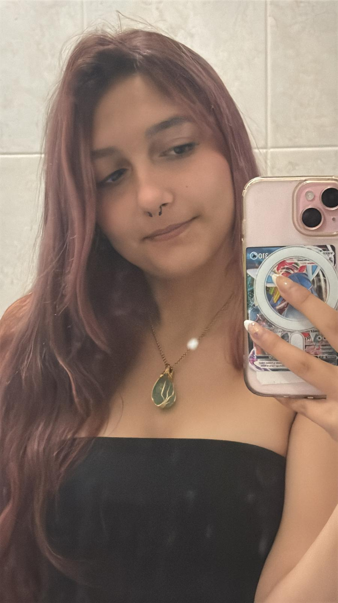

Olá! O meu nome é Carla Moutinho e sou estudante do curso de Tecnologias, Design e Multimédia no Instituto Politécnico de Viseu.
Tenho um grande interesse pelas áreas da tecnologia, design e conteúdos interativos, onde posso combinar criatividade e inovação para desenvolver experiências digitais apelativas e funcionais.
Ao longo do meu percurso académico tenho desenvolvido vários projetos ligados ao design, multimédia e desenvolvimento web, procurando constantemente aprender novas ferramentas e melhorar as minhas competências técnicas e criativas.
Para além da área tecnológica, gosto de videojogos, arte e pintura, interesses que me ajudam a estimular a criatividade e a explorar novas formas de expressão visual.
Interesse pelo design e desenvolvimento de experiências interativas.
A pintura e criatividade fazem parte da minha expressão pessoal.
Curiosidade constante por novas ferramentas digitais e inovação.